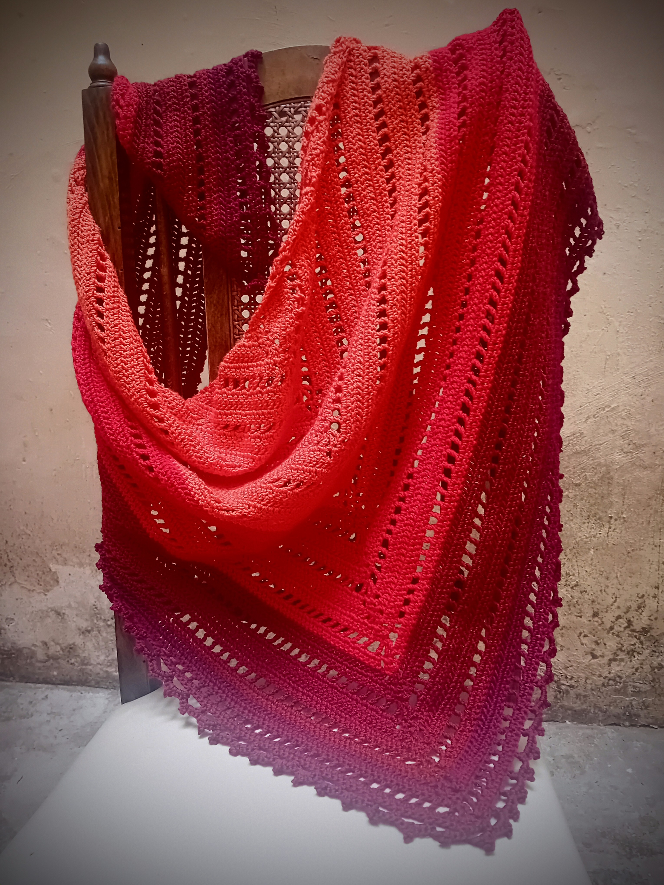

Yarnaddicts, welcome!
If you like to crochet, love yarny things and fiber arts in general, you have landed on the right site...
About The Yarn Magpie
Hi, I'm Helen, the yarn-loving creator behind TheYarnMagpie. I specialize in crafting unique crochet designs, sharing tips and tricks, and celebrating the joy of handmade creations. Whether you're a fellow maker or just yarn-curious, you're most welcome here!
More About TheYarnMagpieFeatured Project
Spring Shawl
Worked in a triangle corner-to-corner, this shawl is designed to keep you cozy and stylish in the cooler spring or autumn evenings. Perfect for yarn enthusiasts looking for a mindless project that works up quickly.
What You'll Find Here
- Original crochet patterns (free and paid)
- Tips and tutorials for all skill levels
- Gallery showcasing finished projects
- Links to my social media and online shop
- Updates and musings on the crochet journey
Join the Yarn Journey
Explore the Gallery to see my latest creations, follow me on Instagram for daily updates, or support my work through Buy Me a Coffee. Your support keeps the yarn flowing!
Yarn Thoughts
"Crochet is like painting with yarn. I love combining color, texture, and technique to create cozy little bits of magic."
Support My Crochet Creations
If you enjoy my work, consider buying me a coffee!
☕ Buy Me a Coffee
Follow Me on Social Media